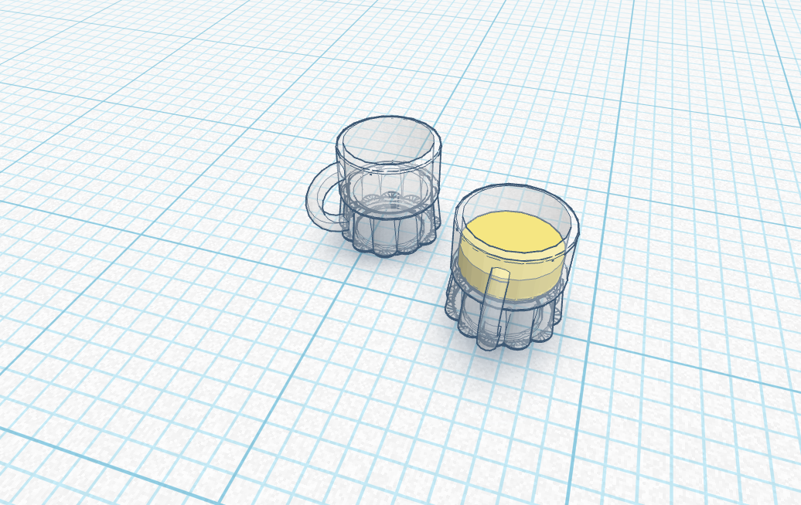

Sezione lavori NTA
Qui troverete i miei lavori, riguardanti il corso, a cui lavorerò durante l'anno. Troverete tutto diviso per materie:
Choose one
 Realizzazione di un bicchiere su programmi cad
Realizzazione di un bicchiere su programmi cad
Ho scelto di reallizzare questo bicchierino su Tinkercad, in scala 1 a 1. Qui sotto troverete il file obj per scaricarlo e successivamente l'immagine in png.
